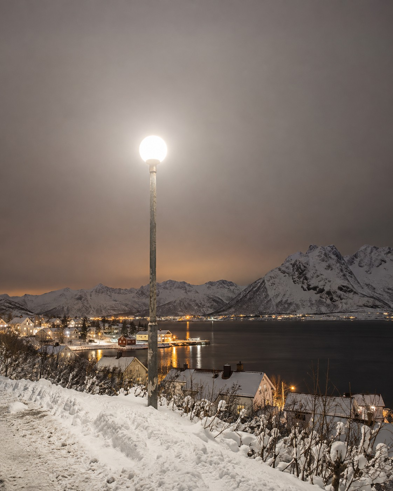

The lamp we have
A bare globe
- Light in every direction. Sideways into bedroom windows, up into the sky, and some of it onto the path.
- Cold white. Blue-rich light scatters more in the air, so more of it comes back as glow.
- Full power until morning. The same brightness at 03:00 as at rush hour.